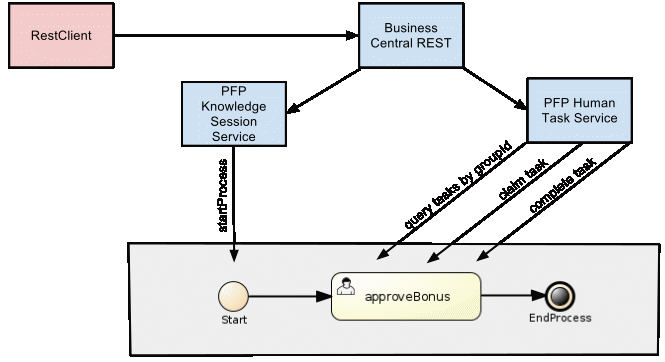

purpose:
Load test harness focused on RESTful interface to jbpm5 process engine.
Most of the RESTful interface is implemented by the BRMS Business Central web app.

assumptions:
- JBoss runtime has been provisioned via PFP with the following properties set in $PFP_HOME/build.properties
org.jboss.processFlow.provision.pfpCore=true
usage:
- review ../build.properties
- from root of project, execute: ant